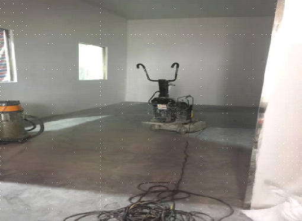
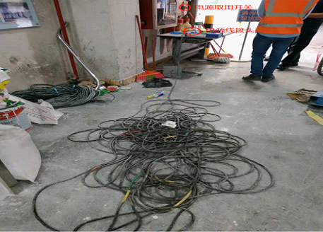
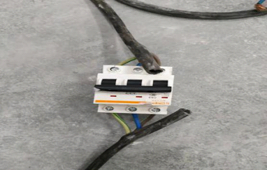
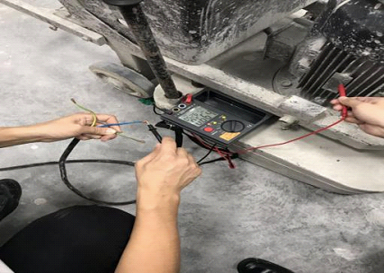
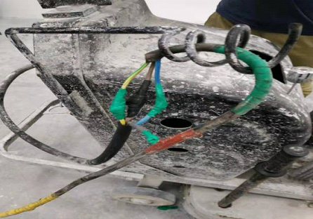

电源开关无漏电保护器，工人无证操作触电身亡
近日，东莞市应急管理局公布一起触电事故调查报告。2019年7月1日22时22分许，位于东莞市桥头镇桥新工业园的舒尔曼塑料（东莞）有限公司成品出料仓内冷冻仓库施工现场发生一起触电事故，事故造成一人死亡，直接经济损失约为106.6万元。
一、基本情况
（一）工程情况及合同关系情况
事故发生的成品出料仓内冷冻仓库改造施工项目位于东莞市桥头镇桥新工业园的舒尔曼塑料（东莞）有限公司，该冷冻仓库面积约36㎡，冷冻仓库内高4.2m。
2019年4月份，舒尔曼塑料（东莞）有限公司采购罗凯斌与东莞市益博机电工程有限公司总经理何代益联系，表示有冷冻仓库需要改造。
2019年5月10日东莞市益博机电工程有限公司总经理何代益联系唐雪娇，让唐雪娇对冷冻仓库地面磨平喷漆工程进行报价，唐雪娇微信发给何代益一个《固化地坪施工方案》里面含有报价等信息，《固化地坪施工方案》中固化漆900元、施工人工费800元，研磨耗材300元，共计2000元。但是东莞市益博机电工程有限公司总经理何代益未与唐雪娇签订书面的工程合同和安全生产管理协议，也未与唐雪娇明确约定结算支付相关费用的方式和时间。
2019年5月21日，舒尔曼塑料（东莞）有限公司采购罗凯斌与东莞市益博机电工程有限公司总经理何代益签订《采购合同》（内包含仓库隔间、宿舍不锈栏杆、排水管道疏通维修等8项条目），其中“仓库隔间”项即为冷冻仓库（冷冻仓库面积约36㎡）改造交付东莞市益博机电工程有限公司进行施工，《采购合同》总价92308元。合同结算方式为工程全部完工，经舒尔曼塑料（东莞）有限公司验收合格后，一次性通过双方公司账户进行支付。
（二）事故相关单位及人员情况
1.舒尔曼塑料（东莞）有限公司，统一社会信用代码：9144190074625789XM,法定代表人：欧德庭，注册资本：人民币壹仟零伍万美元，成立日期：2002年12月30日，住所：东莞市桥头镇桥新工业园，经营范围：生产和销售工程塑料。从事工程塑料、塑料合并、助剂、添加剂母料新产品、色母料产品的批发及进出口业务。
2.东莞市益博机电工程有限公司，统一社会信用代码：91441900MA526KRB7P,法定代表人：何代益，注册资本：人民币壹佰零壹万元，成立日期：2018年8月27日，住所：东莞市桥头镇莲城社区桥光大道（桥头段）456号五楼，经营范围：机电安装工程施工；水电安装工程施工；室内外装修工程施工；建筑工程施工。
3.何代益，性别：男；年龄：48岁；民族：汉族；身份证号： ；政治面貌：群众；文化程度：初中；2018年8月入职东莞市益博机电工程有限公司，任总经理一职。
4.唐雪娇，性别：女；年龄：29岁；民族：汉族；身份证号： ；政治面貌：群众；文化程度：初中；唐雪娇是原东莞市博力建材有限公司的法定代表人（根据国家企业信用信息公示系统显示，东莞市博力建材有限公司于2019年7月22日将企业名称变更为“广东昇汇科技工程有限公司”，唐雪娇任广东昇汇科技工程有限公司法定代表人）。唐雪娇从东莞市益博机电工程有限公司处承接地面打磨工程，组织人力与机械设备进行施工，根据其《谈话笔录》，唐雪娇明确表示聘请覃事正是其个人行为，因此，确定唐雪娇为生产经营单位。事故发生时，唐雪娇只聘用覃事正一名作业人员，且未与覃事正签订书面劳动合同，未与覃事正约定好工资及支付方式等问题。
5.覃事正，本次事故的死者，性别：男；年龄：32岁；民族：土家族；身份证号： ；湖南省石门县人。为事故发生当日唐雪娇临时聘请的作业人员。经查，覃事正未持有特种作业电工证。
6.喻鹏，性别：男；年龄：22岁；民族：汉族；身份证号： ，东莞市益博机电工程有限公司员工。喻鹏为何代益的外甥，未与东莞市益博机电工程有限公司签订劳动合同，是何代益指派的施工现场巡查人员。
7.邓小全，性别：男；年龄：30岁；民族：汉族；身份证号：，平时承接零散工程。与唐雪娇为朋友关系，事故当日将涉事设备研磨机无偿出借给唐雪娇。
8.李侨光，性别：男；年龄：43岁；民族：汉族；身份证号：；政治面貌：群众；文化程度：本科；2018年3月26日入职舒尔曼塑料（东莞）有限公司，任电气与仪表工程师一职。
9.罗凯斌，性别：男；年龄：38岁；民族：汉族；身份证号：；2017年 7月 13日入职舒尔曼塑料（东莞）有限公司任高级采购员。
10.郭姓司机，为邓小全临时聘请，无联系方式，详细信息已无法核实。事故发生当日，该司机与覃事正一同运送研磨机等设备至事故现场。
（三）相关设备情况
“玺豪”牌研磨机，黑色金属外壳，长：115cm，宽：62cm，高180cm。根据《产品合格证》及《保修卡》显示，该研磨机是由研磨机所有人邓小全于2018年11月7日向上海玺豪公司购买（邓小全通过手机购买研磨机，无购买合同，无法确定上海玺豪公司全称）。根据设备参数简表显示，该设备涉及型号为“Z2000/Z8000系列异步矢量变频器”，Z2000/Z8000系列异步矢量变频器是针对三相交流异步电机开环，闭环矢量控制的变频器。正常使用380V电压。事故发生时，研磨机与电源连接的套管三芯电缆为唐雪娇所有。
2019年6月29日，唐雪娇通过电话向邓小全借用研磨机和吸水机，根据谈话笔录显示，唐雪娇与邓小全为朋友关系，邓小全出借研磨机等设备不收取唐雪娇任何费用。
二、事故发生经过和现场处理情况
(一)事故发生经过
2019年6月10日左右，东莞市益博机电工程有限公司喻鹏等作业人员进入舒尔曼塑料（东莞）有限公司进行冷冻仓改造工作，并负责机电安装和装修装饰部分。
2019年7月1日16时左右，覃事正和郭姓司机（无法取得联系）带着研磨机等设备到达舒尔曼塑料（东莞）有限公司冷冻仓库施工现场，喻鹏与其二人一起搬下研磨机，当时研磨机还没有连接套管三芯电缆（用于连接研磨机和电源），司机搬完设备后离开。随后，覃事正开始整理设备，自行连接机器与套管三芯电缆，连接好之后，准备将研磨机连接电源前，向喻鹏确认仓库电源为220V,并要求喻鹏提供380V电源。于是，喻鹏就向舒尔曼塑料（东莞）有限公司电气与仪表工程师李侨光咨询380v的电源位置，30分钟后，即16时33分许，李侨光到现场找了一个电源，并测量确认是380V，但因发现研磨机没有漏电开关，没有同意覃事正接电，喻鹏向何代益反映情况，何代益告知让覃事正他们自己（唐雪娇方）解决这个问题。18时左右，覃事正告知喻鹏，唐雪娇让覃事正自己买一个漏电开关。喻鹏便开车带覃事正去五金店购买。覃事正购买了一个控制开关后（非漏电开关），喻鹏和覃事正一起返回，舒尔曼塑料（东莞）有限公司门卫放他们进入，且当时李侨光不在现场。随后，喻鹏因送其他工人回家，便离开舒尔曼塑料（东莞）有限公司。
19时20分左右，喻鹏回到舒尔曼塑料（东莞）有限公司，看到覃事正已经将研磨机电线接到380v的电源上，喻鹏还看到覃事正试了一下机器，喻鹏让覃事正先去吃饭。
22时左右，覃事正回到施工现场，当时喻鹏在冷冻仓门口收拾东西，舒尔曼塑料（东莞）有限公司有两辆货车在出料仓门口装卸货。随后，覃事正提了一个水桶去接水，喻鹏出去开车。又过了大约15分钟，喻鹏再回到冷冻仓的时候，看到覃事正（未穿戴手套及防滑鞋）仰面躺在地上，眼睛和嘴是张开的，手是弯着搭在胸口，身体僵直。喻鹏发觉覃事正异常，跑过去碰了碰覃事正，发现覃事正没有反应。喻鹏马上给何代益打电话，同时让保安拨打120。半个小时后120到达现场，随后何代益和唐雪娇一起到达现场。120到达后，医生对覃事正抢救了约30分钟，当场宣布覃事正抢救无效死亡。
（二）事故救援和善后处理情况
2019年7月1日22时22分许，事故发生后，喻鹏拨打120急救中心电话求救，约30分钟后医院救护人员到达现场进行抢救，医护人员抢救无效后，当场宣布覃事正死亡。
接到事故报告后，桥头镇人民政府高度重视，桥头镇公安分局派出民警到达现场维持秩序，桥头镇应急管理分局接到事故报告后，立即组织执法人员前往事故现场调查处理，立即对冷冻仓库作出责令暂时停止施工、从现场撤出从业人员的现场处理措施，防止次生事故的发生，并同时查封了涉事设备。经综合评估，在本次事故中，各相关职能部门的应急处置及时，防止事故扩大的同时，为后续事故调查现场勘查奠定了基础。
7月10日，舒尔曼塑料（东莞）有限公司、东莞市益博机电工程有限公司及唐雪娇与死者家属达成赔偿协议，并在东莞市桥头镇石水口人民调解委员会的见证下，签订了《调解协议》编号：（2019）东桥石民调字第0710号，赔偿死者家属106.6万元人民币。
三、事故人员伤亡情况和直接经济损失
事故造成一人死亡，死者覃事正，男性，土家族，1987年1月7日出生，身份证号： ；身份证住址：湖南省石门县雁池乡唐家坪村2组06013号。其为唐雪娇聘请的员工。
根据《居民死亡医学证明（推断）书》显示，覃事正死亡原因为触电。
经统计，事故造成直接经济损失约为106.6万元人民币。
四、事故相关单位及人员履职情况
1.舒尔曼塑料（东莞）有限公司：该公司与东莞市益博机电工程有限公司签订了专门的安全管理协议，明确各自职责。并提供了公司相关安全生产责任制、安全管理制度及安全生产培训教育档案等资料。在覃事正第一次准备使用研磨机外接电源时，舒尔曼塑料（东莞）有限公司电气与仪表工程师李侨光发现研磨机缺少漏电保护，制止了覃事正接用380V电源。
2.东莞市益博机电工程有限公司：该公司未与唐雪娇签订专门的安全管理协议；未建立事故隐患排查治理制度。
3.唐雪娇：唐雪娇从东莞市益博机电工程有限公司处承接地面打磨工程，组织人力与机械设备进行施工，根据其《谈话笔录》，唐雪娇明确表示聘请覃事正是其个人行为，因此，确定唐雪娇为生产经营单位。唐雪娇未对覃事正进行安全生产教育和培训；未制定隐患排查治理制度；未采取有效技术、管理措施，及时发现并消除事故隐患。
五、事故原因和事故性质
（一）事故原因
2019年7月5日，事故调查组在唐雪娇、何代益、喻鹏及李侨光等相关人员在场情况下，对事故现场及使用的设备进行勘验。经勘验，情况如下：
事故现场为正在进行固化地坪施工的舒尔曼塑料（东莞）有限公司冷冻仓库（见图1），施工冷冻仓库尺寸为：长747.9cm、宽484.6cm、高418.5cm。

图1 事故现场具体地点
冷冻仓库内摆放一台“玺豪”牌研磨机及电源线，经谈话笔录反映，事发时覃事正独自接线后开始进行研磨作业，无其他人员在场，被发现时已触电晕倒在研磨机旁地板上。经现场勘查及调查笔录反映，事发时使用的临时电源是从距离研磨机约7m的库房门口三相电源开关引出（见图2、图3）。
图2 电源取用位置及使用电源线
图3 现场三相电源取用开关
事故现场线路连接方式：电源取自库房门口三相电源开关（该电源开关为三相断路器，额定电压380V），连接用电源线为套管三芯电缆，电源线通过一个控制开关（无漏电保护功能，且进线端出线端接反，见图4）连接至研磨机(研磨机使用三相电机，额定电源380V)。
图4 三芯套管电源线中间连接控制开关（无漏电保护功能）
经现场检测临时电源线接电源侧各相接头与研磨机外壳间电阻，蓝色线、棕色线同研磨机外壳间绝缘电阻分别为0.664兆欧、0.646兆欧（见图5、图6），根据绝缘电阻的检测标准每千伏电压绝缘电阻不低于1兆欧姆，该两相绝缘电阻符合绝缘要求；黄绿双色线同研磨机外壳间电阻值仅为1欧姆（见图7）。
图5 套线蓝色线接电源开关端同研磨机外壳间实测电阻0.664兆欧
图6 套线棕色线接电源开关端同研磨机外壳间实测电阻0.646兆欧
图7 套管三芯电缆黄绿双色线接电源开关端同研磨机外壳间实测电阻1欧姆
现场拆封研磨机引出线同电源线接头绝缘胶带，研磨机引出线为三根相线和一根保护线，电源线为套管三芯电缆，连接情况如图8所示，三相电源线（接380V电源）分别同研磨机两相线引出线及一根保护线连接，剩余研磨机一相线引出线未连接，直接导致电源相线连接到研磨机外壳。
图8 研磨机引出线与电源线连接处（三相电源线分别同研磨机两相电源线及保护线连接，未连接线头为研磨机一相电源线）
1.直接原因覃事正未持有特种作业电工证情况下，覃事正将套管三芯电缆的黄绿色线与研磨机的外壳PE线连接，同时将套管三芯电缆另一端（黄绿色此时为相线）接到距离研磨机约7米处的380V三相电源开关，并接通电源，导致研磨机外壳带电。事发时覃事正赤脚站在地面潮湿的施工现场，左手（左手有电伤痕迹）碰触到机器外壳时（此时研磨机外壳已带电），加之该连接的临时电源控制开关无漏电保护功能，车间取电的末级电源开关也无漏电保护功能，电流经人体形成回路，从而导致覃事正触电死亡。
2.间接原因
（1）经调查，覃事正未持有特种作业电工证，自行接电，属无证上岗违章作业。未经培训、缺乏安全操作技术知识。
（2）唐雪娇未对覃事正进行安全生产教育和培训；未制定隐患排查治理制度；未采取有效技术、管理措施，及时发现并消除事故隐患。
（二）事故性质
经调查认定，桥头镇“7·1”一般触电事故是一起一般生产安全责任事故。
六、事故责任认定及处理建议
根据《中华人民共和国安全生产法》和《生产安全事故报告和调查处理条例》等有关规定，建议对桥头镇“7·1”一般触电事故有关责任人及责任单位作出如下责任认定及处理建议：
1.唐雪娇未对覃事正进行安全生产教育和培训；未制定隐患排查治理制度；未采取有效技术、管理措施，及时发现并消除事故隐患。违反了《中华人民共和国安全生产法》的相关规定，导致事故的发生，对事故负有责任。建议由应急管理部门依据相关法律法规对唐雪娇进行行政处罚。
2.覃事正未持有特种作业电工证，自行接电，属无证上岗违章作业。对事故的发生负有责任，鉴于其本人已经死亡，建议不追究其责任。
3.东莞市益博机电工程有限公司未与唐雪娇签订专门的安全管理协议；未建立事故隐患排查治理制度。违反了《中华人民共和国安全生产法》的相关规定。建议由应急管理部门依据相关法律法规对东莞市益博机电工程有限公司进行行政处罚。
事故涉及其他法律责任，如其他当事方是否构成民事侵权等责任，建议当事各方通过其他法律途径解决。
七、事故防范和整改措施建议
为防范此类事故再次发生，建议应急管理部门督促事故相关单位明确负责人职责，坚持“安全第一、预防为主、综合治理”的方针，在今后的生产经营活动中，必须严格遵守《中华人民共和国安全生产法》等法律法规和规章的规定，落实安全生产主体责任，认真做好各项安全生产工作。为防范和杜绝生产安全事故的发生，确保生产安全，现提出以下整改措施：
1.东莞市益博机电工程有限公司对涉及电气设备运行、维护、安装、检修、调试等作业，尤其是临时用电，必须落实作业审批，接电必须由电工完成，并应有人监护。严格执行施工人员的安全培训以及安全技术交底，确保每个人员均已了解企业的安全管理要求、施工风险和应急响应，做好现场风控管理。加强安全管理，把安全生产责任制落到实处。必须坚决贯彻执行《中华人民共和国安全生产法》等相关法律法规、标准规范，严格落实企业安全主体责任，加强现场安全管理，把保护从业人员的生命安全与健康放在首位，坚决不能以牺牲从业人员的生命和健康为代价换取经济效益，把安全生产责任制度真正落到实处。
2.舒尔曼塑料（东莞）有限公司严格把关相关外来施工单位资质进行严格审查，加强现场进出管控，对其安全生产工作统一协调、管理，定期进行安全检查，发现安全问题的，应当及时督促整改。对于相关方等外来、外包单位，每项工程应当与其签订专门的安全生产管理协议，或者在合同中约定各自的安全生产管理职责。对公司的全部场所进行详细的电气安全隐患排查，按照定人、定时、定标准、定措施、定责任进行整改治理。
3.该事故涉及的各单位要经常性针对项目开展施工人员及管理人员、特种作业人员的上岗前安全教育及培训，对管理人员、特种作业人员的资质、资格进行全面检查，防止无证上岗情况再次发生。
原文编辑: EHS资讯
原文链接: https://ehsinfo.cn/2019/08/28/触电事故调查报告20190701.html
版权声明: 转载请注明出处(必须保留作者署名及链接)